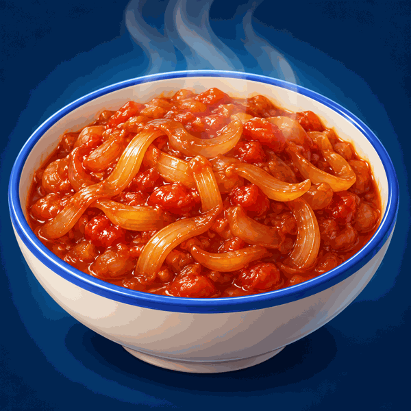
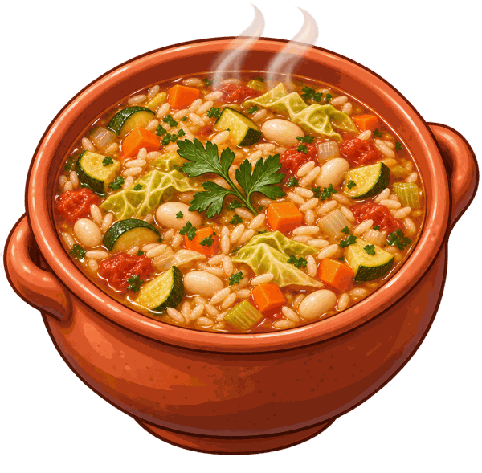

Le ricette di Tavolata
Le ricette vere del Ricettario del gioco, città per città: ingredienti, passaggi e curiosità.
Firenze · Città del viaggio


Bologna · Città del viaggio
 Tagliatelle al ragù
Tagliatelle al ragù Tortellini in brodo
Tortellini in brodo Lasagne alla bolognese
Lasagne alla bolognese Crescentine (tigelle)
Crescentine (tigelle)
Friggione Torta di riso
Torta di riso Passatelli in brodo
Passatelli in brodoVenezia · Città del viaggio
 Sarde in saor
Sarde in saor Risi e bisi
Risi e bisi Fegato alla veneziana
Fegato alla veneziana Bigoli in salsa
Bigoli in salsa Baccalà mantecato
Baccalà mantecato Tiramisù
Tiramisù Frittelle veneziane
Frittelle venezianeTrieste · Città del viaggio


Trento · Città del viaggio
 Canederli in brodo
Canederli in brodo Strangolapreti
Strangolapreti Strudel di mele
Strudel di mele Polenta con funghi e formaggio
Polenta con funghi e formaggio Tortel di patate
Tortel di patate Smacafam
Smacafam Orzetto alla trentina
Orzetto alla trentina Zelten trentino
Zelten trentinoMilano · Città del viaggio
 Panettone
Panettone Torrone di Cremona
Torrone di Cremona Tortelli di zucca
Tortelli di zucca Bollito con mostarda
Bollito con mostarda Risotto alla milanese
Risotto alla milanese Cotoletta alla milanese
Cotoletta alla milanese Ossobuco con la gremolada
Ossobuco con la gremolada Cassoeula
Cassoeula
Minestrone alla milanese Mondeghili
MondeghiliGubbio · Le Feste di Tavolata


Modena · Le Feste di Tavolata

Napoli · Le Feste di Tavolata


Urbania · Le Feste di Tavolata


Verona · Le Feste di Tavolata


Cucina questa ricetta anche in Tavolata
Nel gioco abbini gli ingredienti, completi le comande e restauri le città italiane, da Firenze a Milano. Gratis, con le ricette vere nel Ricettario.
Scarica su App Store